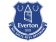
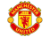
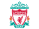

Foot(ball) Support(er)
A Football Sorting Hat
Interest in European Football is on the rise in the United States. If you're looking for a Premier League team (England's top league and the world's most popular) to support, you've come to the right place! Press the START button below to begin.
RestartDo you like Red, Blue or some other color?
Ah Red, a fine choice! Now, are you intereseted in teams with lots of financial firepower, big stadiums and a real chance to win trophies every year? Or do you, like so many Americans, love an underdog?
Ah Blue, a fine choice! Now, are you intereseted in teams with lots of financial firepower, big stadiums and a real chance to win trophies every year? Or do you, like so many Americans, love an underdog?
If not Red or Blue maybe I could interest you in...
So color is not so important to you. Fear not, there are myriad ways to find the perfect team for you. Surely you must be an animal lover. Do you fancy...
So you want to win now, do ya? Great! I like to see some ambition. We've got just one thing left to discuss. Amongst the big boys of the Premier League, there's different ways to go about winning. Do you want your team to spend ridiculous sums on players based on things like 'marketability', Twitter follower counts and having their own emoji, or would you like to see your team spend big money on the right players and develop their youth ranks?
You must like to suffer. That's good, beacause Premier League Fandom is about 90% suffering. Prepare to take many a Sad Nap.
Are you a fan of...
...or are you ineterested in...
...or do you consider yourself to be...
?
If you're up for suffering, love a great stadium, and want to be Roger Bennett's best friend, then surely you're an  Evertonian! Or, if you're into being promoted from the lower divisions, winning the Premier League, sacking your lovely italian-grand-father manager mid-season the next year and still possibly getting relegated, Leicester City might be the club for you.
Congratulations, you should probably be supporting arguably the world's biggest club,  Manchester United, led by Machiavelli reincarnated.
If you're an immensely talented person crippled by self-doubt, and Groundhog Day is your favorite film, you are definitely a Gooner and have a home atArsenal.
Or, if you've been living off past success for too long, but you're still classy, Liverpool would suit you just fine.
You should check out the upstart Cherries of Bournemouth FC!
You should check out the Potters of Stoke City!
You should check out the Saints of Southampton!
You should check out Hull City!
You might like Udinese! I mean Watford FC!
This program worships at the Church of Saints Wenger and Bergkamp, and cannot in good conscience recomend that you root for Tottenham Hotspur.
But you should definitely root for Swansea City! A great little club, and led by a Tottenham Survivor!
If you like your lions made of plastic, it's got be Chelsea for you.
Otherwise you have your pick of newly promoted Burnley and Middlesbrough, or perennial relegation scrappers  Sunderland.
Sunderland.
For cheerleaders and soaring eagles, it's got be Crystal Palace.
Or if you like tracksuits and watching free-flowing attack-minded football, West Brom is the club for you
You should check out the Tigers of Hull City or the Foxes of Leicester City!